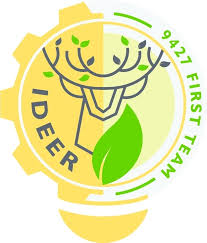

TEAM 9427 | IDEER
新北市立樹林高中
FRC 9427 iDeer 機器人隊
我們是以「iDeer（創意之鹿）」為名的科技團隊。透過雙手組裝機械、編寫控制邏輯、推廣 STEM 工程教育，在 FIRST 機器人全球舞台上展現屬於高中生的創造力與無限潛能！

About us
關於我們的團隊
iDeer 代表著智慧與創意的結合。我們成立於新北市立樹林高中，致力於將學術理論轉化為實際的機器人工程實踐。
我們的使命
藉由參與 FIRST Robotics Competition (FRC) 競賽，培養隊員在機械設計、電路工程、軟體程式、公關行銷與專案管理等多面向技能。以互助合作的精神，實現跨學科的卓越成就。
iDeer 創意精神
「iDeer」取自「Idea（創意）」與「Deer（樹林高中具代表性的鹿）」。象徵如鹿般敏捷的思維與無所畏懼的探索精神，在面對複雜的機械結構與控制邏輯挑戰時，始終保持源源不絕的創新火花。